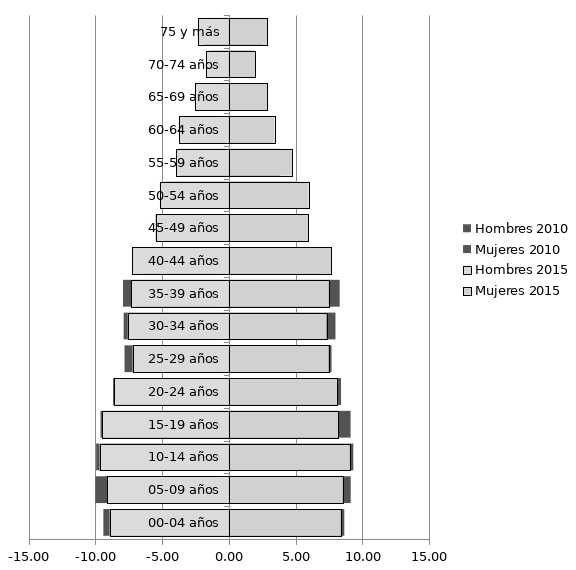
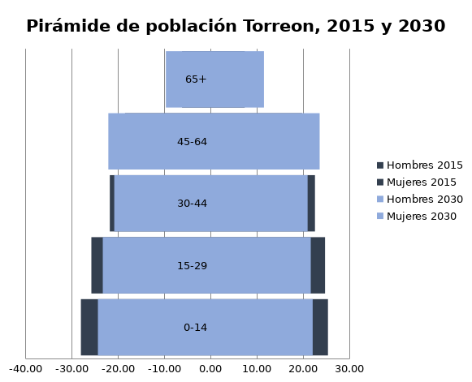

El pasado 11 de julio se celebró el día mundial de la población, fecha establecida desde 1989 para conmemorar el momento en que la población mundial alcanzó los 5 mil millones de habitantes. Este año la celebración se centró en el reconocimiento de la planificación familiar como un derecho humano, reconocida por primera vez en la Conferencia Internacional de Derechos Humanos en 1968, hace 50 años.
Para 2017 la población mundial alcanzó los 7,600 millones de personas. En primer lugar se encuentra China con 1,400 millones de habitantes, le sigue India con 1,300 millones de habitantes, mientras que México se encuentra en el lugar #10 con una población al 2017 de 129 millones de habitantes.
El crecimiento de la población se atribuye al número de nacimientos, al aumento en la esperanza de vida y a la inmigración. De igual forma, los eventos que determinan el decremento poblacional son las defunciones y la migración. Siguiendo el registro de dichos eventos es posible considerar medidas que cubran las necesidades de infraestructura, sociales, económicas, culturales, y de cualquier índole que requiera la población.
En el caso de Torreón, los resultados de la última encuesta intercensal del 2015 registraron una población total de 679,288 personas, un aumento de 39,659 personas del registro censal del 2010. No obstante, es la población desagregada por edad la que retrata los cambios más significativos.
En el caso de los hombres para 2015, el grupo de edad de 5 a 9 años registró un decremento del 0.9% comparado al 2010; al igual que para el caso de las mujeres cuyo grupo con reducción más significativa fue el sector de 15 a 19 años también en un 0.9%.
En general, es la población menor de 39 años quienes presentan disminución, y en contraposición las personas de 40 años y más aumentan su población.
Conforme a las proyecciones de población que realiza CONAPO, para 2030 se espera una población total de 798,014 habitantes en Torreón. Esto significa que dentro de 15 años, los hombres de entre 45 y 64 años habrán aumentado 3.6% su población seguido de los hombres de 65 años y más con un aumento de 3.4%. Mientras que para las mujeres, se espera que en 2030 el grupo de 65 años y más cuente con un crecimiento del 4.1% seguido del grupo de 45 a 64 años con un aumento del 3.8%.
Es necesario tomar en consideración que aunque el número promedio de hijos por mujer en Torreón sea de 2.1, lo que mantiene un crecimiento poblacional constante; los grupos en edad fértil tienen cada vez menor población. En 2015 se registraron 13,549 nacimientos en Torreón, mientras que en 2016 se registraron 12,926 nacimientos.
Así mismo gracias al aumento en la calidad de vida, la esperanza de una persona al nacer va en aumento. En 2014 Coahuila tenía una esperanza de vida de 75.5 años, para el 2017, la esperanza de vida al nacer fue de 76.2 años para la población total, 74.2 años para hombres y 78.2 años en mujeres.
El aumento de edad en la población presenta retos de infraestructura, sociales y de salud; Un ejemplo de ello es el cuidado de adultos mayores, en el Directorio Estadístico Nacional de Unidades Económicas (DENUE) se tiene un registro de 4 establecimientos dedicados al cuidado del Adulto mayor en Torreón. En cambio, en el registro se encuentran 125 guarderías, lo que equivale a 4 establecimientos dedicados a las necesidades del 7% de la población (porcentaje de adultos mayores), frente a 125 guarderías para cubrir la necesidad del 8% de la población (porcentaje de menores de 4 años en Torreón).
Torreón aún no es una población envejecida, no obstante el crecimiento de este sector es innegable y la ciudad debe prepararse para enfrentar esta situación en el futuro próximo. Así como estrategias para consolidar el sector económicamente activo, y sostener a la población dependiente (niños y adultos mayores).
Pirámide de población de 2010 y 2015 Torreón.

Fuente: INEGI censo 2010, Encuesta intercensal 2015. (Hombres 2010 y 2015 representados en a la izquierda y mujeres 2010 y 2015 representadas a la derecha de la pirámide)
Pirámide de población de 2015 y 2030 Torreón.

Fuente: CONAPO, proyecciones de población para Torreón Coahuila.
Referencias INEGI, Indicadores de población